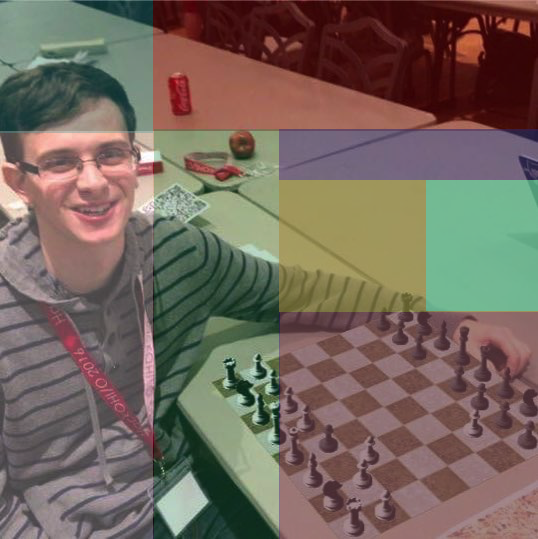

Hello. My name is Danny Flax and this website contains three pictures of myself. This is the first one:
It was pretty simple to create. I took it on Instagram using one of their default filters.
The second one was made using OS X's preview app to tinker with exposure, saturation, sharpness, and tint:
I made the third one by dragging and dropping a bunch of transluscent rectangles in Paintbrush:
In this website, I have demonstrated my proficiency in technology from the 1990's and early 2000's.